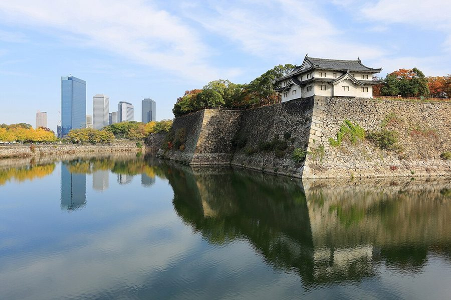
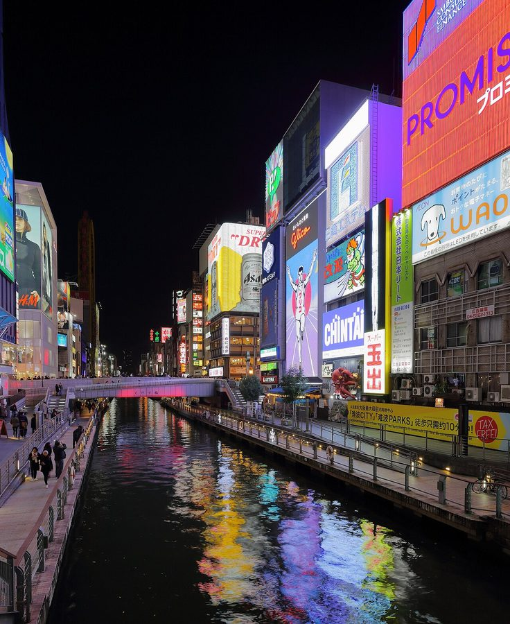

大阪府大阪市のソフトクリーム・ジェラート・かき氷（202件）
寄り道スポット検索アプリ「ヨッテコ」の収録データから、大阪府大阪市のソフトクリーム・ジェラート・かき氷を営業時間・料金つきで一覧にしました（2026年8月時点）。
最も遅くまで開いているのはSWEETS STREET 寺田町店（翌3:00まで）。
大阪府大阪市はどんなまち？
数字で見る🔍大阪府大阪市
2,798,782人
人口（住民基本台帳・2026年1月1日）
225.34km²
面積
まちの横顔


- 地形と気候: 市域に多数の河川や堀を有し、歴史的に港湾機能や河川交通が発達していたことから「水都」の異名を持つまちです。瀬戸内海式気候で年間を通じて温暖な一方、夏は非常に蒸し暑く、8月の平均気温は29.0℃で、都道府県庁所在地の中では那覇市と並んで最も高い値です。
- 観光: 日本の商都として商業や国際観光が盛んな世界都市で、梅田・北新地・難波・心斎橋といった世界水準の繁華街のほか、天王寺や新世界、京橋、上本町、十三など複数の繁華街を擁します。イギリスの調査機関による「最も住みやすい都市」ランキングでは、2023年度版で世界10位・アジア1位と評価されています。
- 特産と文化: 江戸時代には豊臣秀吉が大坂城を築城して商人を集め、「天下の台所」の異名を持つ商都として城下町が整備されました。世界初の先物取引市場である堂島米市場も置かれ、京・堺・平野などとともに豊かな町人文化（上方文化）を育みました。
寄り道充実度（全国偏差値）
偏差値・順位は、ヨッテコ収録データ（2026年8月時点・26,033件）を市区町村別に集計した施設数の全国分布（1,728市区町村）から毎回算出しています。カードを押すとカテゴリ別の分析に切り替わります。
アイスから見た大阪府大阪市
市内にアイスのお店202件、全国1位。——アイスを食べる場所が、日本でいちばん多いまち。
202件
アイスが食べられるお店（全国1位・上位0.1%）
237偏差値
アイス充実度
56%
アイスクリームを出す店の割合（全国39%）
- アイスクリームを出す店は56%、全国水準（39%）の1.4倍。梅田・難波・心斎橋など世界水準の繁華街を擁し、国際的に高い住みやすさの評価を受ける商都。選択肢の幅が、56%という数字に表れています。
- 50%——ソフトクリームを置く店は、全国の62%に届きません。ジェラートやかき氷など、別の形が選ばれているということになります。
- ジェラートを出す店は9%で、全国水準（14%）を下回ります。ジェラートが目当てなら、行き先を決めてから動くのが良さそうです。
出典: 施設データ=ヨッテコ収録データ（26,033件・2026年8月時点）。偏差値・全国順位・全国水準は全1,728市区町村の分布から毎回算出。 / 人口=総務省「住民基本台帳に基づく人口、人口動態及び世帯数」（2026年1月1日現在） / 面積=国土地理院「全国都道府県市区町村別面積調」（2026年4月1日時点） / まちの解説=日本語版Wikipedia「大阪市」（https://ja.wikipedia.org/wiki/大阪市、2026年8月21日取得、CC BY-SA 4.0） / 写真=Wikimedia Commons（各キャプションに作者・ライセンスを記載）
曜日別の営業施設数
| 月 | 火 | 水 | 木 | 金 | 土 | 日 |
|---|---|---|---|---|---|---|
| 137 | 145 | 146 | 152 | 166 | 167 | 153 |
月曜日が最も休みが多く（各36件が定休）、年中無休は91件です。※営業時間データのある173件で集計
施設一覧
| 施設 | 営業時間 |
|---|---|
| 082.ch.eat.day/チートデイ/クレープ/スイーツ ソフト | 18:00〜24:30 ※曜日により異なる |
| 0cal 大阪住之江店 アイス | 17:00〜27:00 |
| 21時にアイス ユニバーサル・シティウォーク大阪店 ソフトアイス ユニバーサルシティ・ウォーク店内でソフトクリームを提供。夕食やお酒の後に食べたくなる、あっさりとしたミルクアイス | 11:00〜23:00 |
| 21時にアイス 心斎橋店 アイス | 16:30〜24:00 ※曜日により異なる |
| 21時にアイス 難波 アイス | 16:30〜24:00 |
| BIG BEAR アイス | 15:00〜20:00 ※曜日により異なる |
| BOTANICAL HOUSE ソフトかき氷アイス | — |
| Be Clover Roastery 福島焙煎所 ソフト | 12:00〜18:00 ※曜日により異なる |
| CAFE大阪茶会 ソフト 天神橋筋商店街に2016年オープン。日本のお茶と焼き物を紹介。和歌山市の玉林園提供による抹茶ソフトクリームを販売 | 13:00〜20:00 |
| COAST TO COAST Burger&Coffee ソフトアイス | 11:00〜15:00 ※曜日により異なる |
| COFFEE&DESSERT S CAFE ソフト 大阪・沖縄・東京・福岡で飲食店を展開する獅子楼グループが提供するソフトクリーム。 | 14:00〜23:00 |
| CORAL PARLOR enoco ソフト 阿波座駅徒歩2分。メトロ千日前線阿波座駅近くでソフトクリームを提供 | 11:00〜20:00（月休） |
| Cafebar.8 ソフト | 12:00〜17:00（月・火・水休） |
| Café NoHo ジェラートアイス 自家製ジェラートと、グルテンフリー対応の自家製ワッフルを提供。 | — |
| Café＆BAR Sa Salu ソフト 天塩町宇野牧場で育ったグラスフェッドミルクを使用。イタリアのカルビジャーニが織りなすふあふあ食感のもこもこソフトクリーム… | 10:00〜20:00 |
| DAIBAN COFFEE tsurumi かき氷 | 08:00〜20:00 |
| Dr.Fruits ドクターフルーツ ソフトアイス | 13:00〜22:00 ※曜日により異なる |
| Empiffrerie（アンピフルリ） アイス 京橋のはずれにあるケーキやカフェ、ランチ、ディナーを楽しめるお店。2005年1月開店。アイスクリームも提供 | 10:00〜20:00 |
| FAR EAST BAZAAR 大阪タカシマヤ店 ジェラートアイス モロッコ市場のフルーツパフェやビターレモンジェラート、飯能産柚子ジェラート、アンデス産カカオパフェ、焼きりんごパフェ、桜… | 10:00〜20:00 |
| FLOR GELATO ITALIANO OSAKA ジェラートアイス ローマのジェラート専門店日本1号店。イタリア本店から直輸入の天然素材と日本独自の旬素材を使い、多種多様なジェラートを提供… | — |
| FarmAJ(スイーツ自販機) アイス | — |
| Fruits Farm Franc ソフト | 11:00〜17:30 |
| GELATERIA solege 北加賀屋店 ジェラートアイス 素材と製法にこだわったジェラート100種類以上を提供。新鮮な果実を活かした生ソルベは冷凍ピューレ不使用。独自の非加熱製法… | 11:30〜22:00 |
| Gelateria Bello‼︎ 大阪 ジェラートアイス | — |
| Groovy Ice Cream GUFO ソフトアイス | 12:00〜18:00 ※曜日により異なる |
| ICE-UPPER大阪長居 アイス | 10:00〜15:00 ※曜日により異なる |
| IKEAビストロ 鶴浜 ソフト | 11:00〜18:30 ※曜日により異なる |
| IKOIKO churros ソフト | 11:00〜18:00（火休） |
| J.S. FOODIES 天王寺ミオ店 アイス | 10:30〜20:30 |
| JULIAN ICE CREAM アイス | 12:00〜19:00 |
| JULIAN♡SUCRÉ♡ACID ソフトアイス 日本のフランス菓子職人が作る。アメリカンなテイストのアイスクリームとソフトを提供 | 11:00〜23:00 |
| KARAOKE39 ソフト | 10:00〜27:00 ※曜日により異なる |
| KEY'S CAFE 大阪南港ATC店 ソフト | 08:30〜20:00 ※曜日により異なる |
| Kith Treats Osaka アイス | 11:00〜21:00 |
| MACCHA HOUSE 抹茶館 なんばウォーク アイス | — |
| MAZE CAFE LAB アイス | — |
| MJKIMsCoffee ソフト | 11:00〜18:00（火休） |
| MONDIAL KAFFEE 328 TUGBOAT かき氷 | — |
| Moana cream（モアナクリーム）大阪鶴橋店 アイス | 13:30〜22:00（水休） |
| OYASUMIICE&HOTEL アイス | 12:30〜23:30（木休） |
| Osaka コロミツ堂 かき氷 | 11:00〜19:30 |
| PALM アイス | — |
| PASTICCERIA Egoistica パスティッチェリーア エゴイスティカ ジェラート 関西でも数少ないイタリア菓子専門店。ジェラートフェアを開催し、ジェラートを販売。 | 11:00〜19:00（火休） |
| Picco Latte ピッコ ラッテ ソフトジェラート | 11:00〜18:00 ※曜日により異なる |
| ROLLED UP ソフトかき氷 | 13:00〜18:00（月休） |
| Rita Gelato&bar アイス | 19:00〜24:00 ※曜日により異なる |
| SHE＆CREAM シーアンドクリーム アイス | 13:00〜17:30 |
| SWEETS STREET 寺田町店 アイス | 19:00〜27:00 ※曜日により異なる |
| Spica Cakery (スピカケイクリー) ソフトアイス | 14:00〜19:30（火・水休） |
| Sweets cafe くるくる クレープ ソフト | 13:00〜22:00 ※曜日により異なる |
| TAFU GELATO FACTORY アイス | 11:00〜17:00 |
| TREM'S アイス | 11:00〜18:00（水休） |
| V&S ソフト | — |
| YOGURT WORLD ヨーグルトワールド 梅田HEP FIVE店 ソフトアイス 韓国で最も注目されるブランド。オリジナルのカスタムが可能。ドバイチョコとヨーグルトアイスの贅沢な組み合わせを提供 | 11:00〜21:30 |
| YOGURT WORLD千林店 アイス | 11:30〜22:00 |
| Yogur B アイス | 10:00〜18:00 |
| cafe POKO POKO Soft serve ice cream アイス | 11:00〜20:00（月休） |
| coffee stand TENGACHA アイス | 09:00〜19:00 ※曜日により異なる |
| furu furu フルフル アイス | 13:00〜17:00 ※曜日により異なる |
| gelamu. ジェラート専門店 ジェラートアイス ジェラート専門店gelamu. 香料や着色料、添加物の使用を抑え、10種類のレギュラーフレーバーを揃える。 | 12:00〜22:00（木休） |
| gelato Bòurne アイス | 13:00〜23:00 |
| imakaraICE 夜アイス ソフトアイス | 17:00〜25:00 ※曜日により異なる |
| jewel アイス | 16:00〜24:00（日休） |
| mou×mouミルキーパラダイス千日前本店 ソフトアイス | 12:30〜22:30 |
| nana's green tea 天王寺ミオ店（matcha cafe） ソフト 抹茶や日本茶を専門とするカフェ。オリジナルブレンドの抹茶ソフトクリームラテを提供。 | 10:00〜22:00 |
| nonon 北海道ソフトクリーム＆フルーツ飴 アイス | 20:00〜26:00 ※曜日により異なる |
| nöjd ICE CREAM アイス 厳選した自然由来素材と伝統的製法で、添加物を最小限に抑えたアイスクリームを製造。大阪産食材を活用し、一つひとつ丁寧に手作… | 11:00〜18:00 ※曜日により異なる |
| sari sari store（cocowell） アイス 2004年創業のココナッツ専門店。フィリピンのよろず屋をテーマに、有機ココナッツミルクとシュガーをベースに乳化剤不使用の… | — |
| sweet night ice アイス | 20:00〜26:00 |
| sweets gallery ℃ sesshi ジェラートアイス | 13:00〜19:00（木休） |
| toiru cafe ソフト | 08:00〜20:00 |
| tutu ワッフルコーン専門店 アイス | 10:00〜18:30（火休） |
| yoajung（ヨーグルトアイス） アイス | 10:00〜18:00 |
| éclat de paix by amsu tea（エクラ・ドウ・ペ by アムシュティー） アイス 紅茶専門店。紅茶オークションの仕組みに着想を得た特別メニューを提供。アイスも併売。 | 11:00〜20:00 |
| “R”RIVERSIDE GRILL＆BEER GARDEN（中之島公園バラ園） ソフト 中之島公園バラ園内にあるリバーサイドのビアガーデン・グリルレストラン。バラをイメージしたピンク色の「ローズソフトクリーム… | 11:30〜21:00 |
| 〒553-0005 大阪府大阪市福島区野田２丁目１６−２２ お好み焼 みどり ソフトクリーム ソフト | — |
| あかさたな ソフト | 10:00〜16:00（火・土休） |
| うどん屋の横カフェ かき氷アイス | 09:30〜22:30（水・木休） |
| おかんの...アイスとクレープ テイクアウト アイス | 20:00〜25:00 ※曜日により異なる |
| お芋スイーツ専門店 芋よし 住之江店 ソフト おいもスイーツ専門店。住之江駅店として営業し、すみよっさんの愛称で親しまれる住吉大社のお膝元でソフトクリームを提供 | 10:00〜18:30（木休） |
| からふね屋珈琲 エキマルシェ新大阪ソトエ店 ソフトジェラートアイス | 07:00〜22:00 |
| くるみ製菓店 ソフト | 10:00〜19:00 |
| くろーばー結び 本店 かき氷 | 10:30〜18:00（月休） |
| こおり屋 金蓮花 かき氷 | 13:00〜19:00 ※曜日により異なる |
| さくらカフェ(SAKURA Cafe) ソフト | 10:00〜17:00（土・日休） |
| さつまいも専門店 laugh ラフ ソフト | 11:00〜18:00 ※曜日により異なる |
| たこ焼きとアイスクリームのお店「じゅんさん」 アイス | 17:00〜21:00 ※曜日により異なる |
| だいちゃんアイス〜Daice〜 アイス | 18:00〜25:00 |
| とぅるーとぅるー旭区清水店 アイス | 12:00〜25:00 ※曜日により異なる |
| なんばでアイス アイス | — |
| ねぼけ堂 アイス | 12:00〜17:00（月・日休） |
| のとや豆腐店 ソフト | 10:00〜19:00（日休） |
| ぼくのアイストーリー ソフトアイス | 15:00〜22:00（月・木休） |
| ぽこまろん ソフトかき氷 | 10:00〜18:00 |
| まちのチーズケーキぷりん直売所 かき氷 | 11:00〜21:00 |
| みるくの道/hide out アイス | 18:00〜22:00 ※曜日により異なる |
| むろの小町 かき氷 | 11:30〜18:30 |
| らぽっぽファーム心斎橋店 ソフト さつまいもスイーツ専門店の「らぽっぽファーム」。さつまいもをふんだんに使用したスイーツを提供し、ソフトクリームも併売。 | 11:00〜20:30 |
| りくろーおじさんの店 住之江公園店 ソフト りくろーおじさんの店初の大型郊外型店舗。専用駐車場を完備し、地下鉄四ツ橋線住之江公園駅4番出口すぐの立地でソフトクリーム… | 08:00〜19:00 |
| わしや ソフト | 12:00〜22:00（水休） |
| アミティ・アイスクリーム アイス | 10:00〜18:00 |
| アルロイック 阪急うめだ本店 ジェラート 南フランスのパティシエLoic Langry氏がメニュープロデュースするジェラートと旬のフルーツを使ったプレミアムクレー… | 10:00〜20:00 |
| アンジュ～ポテりーむと和洋スイーツのお店 ジェラートかき氷 マッシュポテトへの想いから始まったアンジュ。小麦・卵・乳不使用のジェラート「ポテりーむ」を提供。 | — |
| ウメダチーズラボ Factory＆Cafe かき氷アイス | 11:00〜19:00 |
| オオカミのおやつ。 アイス | 11:30〜17:30（日休） |
| オホーツク おこっぺミルクスタンド 阪神梅田本店 ソフトアイス オホーツク海に面した興部町の牧場『ノースプレインファーム』の乳製品を使った、雑味のない味わいが特徴のソフトクリームを阪神… | 11:00〜22:00 |
| カドヤ ソフト | 11:00〜20:00（日休） |
| カドヤ 東店 アイス | 13:00〜22:00 |
| カフェ R.O.F ソフト 日本海溝水槽の奥に位置するカフェ。水槽を眺めながら過ごせる客席に加え、ジンベエソフトなどの限定ソフトクリームを提供するド… | 10:00〜19:30 |
| カフェ ユニークスプーン かき氷 大阪市住吉区にあるスイーツと珈琲の小さなカフェ。かき氷を提供 | — |
| カフェ·ドゥ·アンサンブル アイス | 09:30〜16:30（月・日休） |
| カフェスイーツ&ビストロバル 千林 ijii ソフト | 11:30〜23:00（日休） |
| カフェチャレンジャー88靱公園店 ソフト 大阪堀江のMONDIAL KAFFEE328にて、店舗オリジナルで焙煎したコーヒー豆を使用し、ソフトクリームを提供。カッ… | — |
| カフェ・ベローチェ 西中島南方店 ソフト 1970年、東京・神田神保町に珈琲館1号店がオープン。ソフトクリームを提供。 | 07:00〜21:00 |
| カフェ＆ダイニング アデール ソフト | 07:00〜14:00（木・日休） |
| カーニバルジェラート アイス | 11:00〜21:00（火休） |
| カームガーデン ジェラートアイス | — |
| クリームフェスト 住之江本店 ソフトアイス 「Cream（クリーム）＋Fest（フェスティバル）」を由来とするソフトクリーム専門店。ソフトクリームとパフェを提供 | 12:00〜22:00 |
| クレープ SALA（サラ） アイス | 15:30〜19:00 ※曜日により異なる |
| クレープ 【THOUSAND Cafe＆BAR】 アイス | 11:30〜23:00（月・日休） |
| クレープ バオバオ ソフト | 12:00〜22:00（水休） |
| クレープ★ふる～る アイス 10種類のソフトアイスを準備。信頼性の高い国産タピオカを使用し、バリエーション豊かなアイスを楽しめる。 | 11:30〜20:00（水休） |
| クレープとお菓子えんどう アイス | 12:00〜19:00 ※曜日により異なる |
| クレープオリバーくん ソフト | 11:00〜20:00 ※曜日により異なる |
| クレープゴリラ ソフト | 11:00〜21:00（月休） |
| クレープリー・アルション ティーテーブルカフェ｜天王寺ミオ店 ジェラートアイス ガレットとクレープを主力とする店舗。フランス産エシレバターとゲランドの塩を使用し、ジェラートも提供。 | 11:00〜21:00 |
| グラスリー サロンドテ イルド プチフェーブ アイス | 12:00〜19:00（月・火休） |
| コンフィテリア・エーセ（confiteria S） かき氷アイス | 10:00〜20:00 |
| サンマルクカフェ イオンモール鶴見緑地店 ソフト イオンモール鶴見緑地内のカフェ。店内でソフトクリームやアイスを提供。 | 10:00〜21:00 |
| シメパフェ専門店らぶみる ソフト | 15:00〜22:00（月休） |
| シルクレーム 阪急三番街店 ソフトアイス NISSEI直営店。北海道産素材のソフトクリームを提供。CREMIA併設の阪急三番街南館B2Fの店舗 | 11:00〜21:30 |
| ジェラテリア チルコドーロ ジェラートアイス 1985年創業、現存する国内最古級の家族経営ジェラート専門店。イタリア・リミニの国際ジェラートコンテストで4位入賞歴あり… | 11:00〜19:00（水休） |
| ジェラート屋 オオジ ジェラート | 11:00〜21:00（火休） |
| スイーツパラダイス天王寺ミオ店 アイス バイキングでスイーツやパスタ、カレーなどを食べ放題。アイスクリームも提供 | 10:30〜22:00 |
| ゼ－六 本町店 アイス | — |
| ソフトクリーム専門店 Lantern アイス | 18:00〜23:00 ※曜日により異なる |
| チンクエチェント かき氷アイス | 10:00〜19:00 |
| ドリンクスタンド SEA SAW ソフト | 10:30〜19:30 ※曜日により異なる |
| ドレ 阪急うめだ店 ソフトアイス 八街産の落花生を使用したソフトクリームを提供。店頭でペーストにするフレッシュバターと、北海道産ミルクとのハーモニーが特徴… | 10:00〜20:00 |
| ニホンノオカシ 春夏秋冬 ソフトアイス | 10:00〜19:00（月休） |
| ハニーミツバチ珈琲 南森町 ソフト | 07:00〜20:00 ※曜日により異なる |
| パティスリー アンコール ソフト | 10:00〜21:00（水休） |
| パンヤ ソフト | 11:00〜17:00（火・水休） |
| ビアンシュール ソフトアイス | 08:00〜20:00 |
| フライドポテト専門店 POTALU🍟 ソフト | 15:00〜22:00 ※曜日により異なる |
| フルーツパーラー農家の実 ソフト | 10:00〜20:00（月休） |
| フルーツモンキー ジェラート 2015年開業、熊本県産の新鮮な牛乳・果実・野菜を使ったジェラート専門店(テイクアウト専門)。北浜エリアに立地。 | 11:00〜17:00（木・日休） |
| ブルーシール 大阪鶴橋 ソフトアイス | 11:30〜20:00 |
| ペッカプ ソフト | 13:00〜23:00 |
| ホリーズカフェ ライフ喜連瓜破店 ソフト | 09:00〜20:00 |
| ラ・ムー 生野店 ソフト | 00:00〜24:00 |
| ラ・ムー 西淀川中島店 ソフト | 00:00〜24:00 |
| ルッジェーリ アイス 常時13〜16種のジェラートを提供。シチリアブロンテ産最高級ピスタチオを使用し、RUGGERI人気定番フレーバーを展開。 | 11:00〜20:00（水休） |
| ロゴス BBQスタジアム＆カフェ ATC店 ソフト 大阪南港ATC内にオープンしたロゴスBBQスタジアム＆カフェ。素材にとことんこだわったメイプルソフトなど、ソフトクリーム… | 11:00〜18:00（月休） |
| ロリアン・クレープ 千林店 アイス | 11:30〜18:00 ※曜日により異なる |
| ロールアイスクリームファクトリー｜天王寺ミオ店 アイス アイスクリーム用20種類の原材料と40種の特製トッピングを5つの基本フレーバーに組み合わせる製造販売店。天王寺駅直結の商… | 10:30〜20:30 |
| 三毛茶 かき氷 | 10:00〜20:00（火休） |
| 京都宇治 『茶想もりた園』 なんば店 かき氷 日本一の茶師が監修する本格和カフェ。最高級の抹茶やほうじ茶を使用し、庭園のような見たもりた園パフェやソフトクリームを提供… | — |
| 今夜もアイス 天王寺店 アイス | 17:00〜23:00（月休） |
| 元祖アイスドッグ ソフトアイス 注文を受けてから揚げるアツアツのパンに、北海道産牛乳と生クリームを使った濃厚ソフトクリームを挟んだアイスドッグを提供。綿… | 11:00〜21:00 |
| 北極 アイス 昭和20年創業。戎橋商店街にほっとできる場所を提供し、ミルクやあずき、パインをはじめ、ココアや抹茶など様々なソフトクリー… | 10:00〜20:00 |
| 北海道うまいもの館 KITTE大阪店 ソフト 北海道出身者が集まり願いで始めた「北海道フーディスト」。ソフトクリームを提供 | 11:00〜20:00 |
| 千成屋珈琲 ソフト 昭和23年創業の喫茶店。ミックスジュース発祥の店として親しまれ、ソフトクリームも提供。 | 11:30〜19:00 ※曜日により異なる |
| 喜八洲総本舗 本店 ソフト | 10:00〜20:00 |
| 四天王寺茶屋 かき氷アイス | — |
| 売店 ソフト | — |
| 夜アイス専門店 よるのアイス アイス | 20:00〜24:00 ※曜日により異なる |
| 宇治園 心斎橋本店 かき氷アイス 1869年創業の宇治園。看板茶「小佳女」「火男」を原料としたパフェ、ソフトクリーム、アイスを提供。 | — |
| 富良野みるく工房 ソフト 明治開拓期から115年続く藤井牧場直営。富良野の生乳を使った濃厚ながらスッキリとした味わいのソフトクリーム。食パンやチー… | 09:30〜18:00（火休） |
| 小原春香園 ウイステ店 ソフト | — |
| 心斎橋ミツヤ 京阪モール店 ソフト | 11:00〜22:00 ※曜日により異なる |
| 恵美須ソフトクリーム アイス | 09:00〜22:30（月休） |
| 掛軸茶屋 抹茶ソフトと抹茶体験 田中表具店 アイス | 10:30〜20:00 |
| 日式飲茶 点心の気持ち アイス 2021年開業、丸亀製麺に着想を得たライブ感と手作りに特化した新業態『点心の気持ち』。大阪市大正区に直営店兼工房を構え、… | — |
| 日高製菓 アイス | 12:00〜21:00 |
| 杉養蜂園 KITTE大阪店 ソフト はちみつ製品を扱う店。はちみつソフトクリームを提供し、大阪駅直結のKITTE内に立地 | 11:00〜20:00 |
| 梅田でアイス アイス | 17:00〜24:00 ※曜日により異なる |
| 森の美味しい珈琲屋 アイス | 10:00〜18:00 ※曜日により異なる |
| 浅草茶屋たばねのし 大阪港店 アイス 浅草の和クレープ専門店。日本一のお茶の産地・静岡県掛川市の上質な抹茶を使用したアイスクリームを提供。 | 11:00〜18:00 ※曜日により異なる |
| 温泉割烹ゆ海らんど ソフト 天然温泉こうわの湯の館内に佇む「ゆ海らんど」。温泉施設内のソフトクリームを提供。 | 17:00〜23:00 ※曜日により異なる |
| 無人のアイス屋さん 十三本店 アイス 大阪に店舗を構える韓国のアイスクリームをメインに取り揃えた無人販売所。魅力的な韓国の冷凍食品、インスタント食品、お菓子も… | — |
| 甘党 まえだ なんばウォーク店 アイス | 10:00〜21:30 |
| 甘党まえだ あべちか店 ソフトかき氷アイス 昭和43年開業の和菓子店。あんこや寒天、ソフトクリームなどを自家製で提供。甘党まえだの美味しさの秘密は、素材へのこだわり… | 10:00〜22:00 |
| 甘党まえだ あべのキューズモール店 ソフトかき氷アイス | 10:00〜21:30 |
| 甘党まえだ 天王寺ミオ店 ソフトかき氷 | 11:00〜22:00 |
| 甘味処 角屋 ソフトアイス | 13:30〜20:00（月・火休） |
| 甘味処鎌倉 大阪天満宮前店 ソフト 1991年創業。わらびもちやわらびもちバニラアイス、かき氷を提供。わらびもちドリンクには浅川園の抹茶を使用 | 10:30〜18:00 |
| 白泉堂 ソフトかき氷 昭和のままの喫茶店。元祖いか焼きの店として知られる白泉堂では、神戸六甲牧場の生乳を使ったソフトクリームと、懐かしいアイス… | 09:00〜17:00（日休） |
| 自家焙煎カフェ チャオッペ ソフトアイス | 11:00〜18:00 ※曜日により異なる |
| 芋や むかい 新深江店 ソフトアイス | — |
| 芋屋金次郎 グランフロント大阪店 ソフト | 10:00〜21:00 |
| 茶青花 阪急三番街店 ソフト 豆腐料理の人気店「梅の花」が展開する女性目線のお店。豆乳や豆腐を使用したソフトクリームや豆花を提供。大豆の甘みと滑らかな… | — |
| 菓人sweets ソフト | 12:00〜19:00 ※曜日により異なる |
| 赤一 かどや ソフトかき氷アイス | 11:00〜19:00 |
| 辻利 アルデ新大阪店 ソフト 萬延元年創業の宇治茶老舗。伝統から新しいかたちまで茶匠のこだわりを届ける。ソフトクリームを提供 | 09:00〜21:00 |
| 野江ペンギン商店 ソフトかき氷アイス | 13:00〜20:45 ※曜日により異なる |
| 関目冷菓 ソフトアイス | 11:00〜20:30 ※曜日により異なる |
| 食堂カフェpotto あべのキューズモール店 ソフト もりのみやキューズモールBASE内の店舗。森ノ宮駅から徒歩5分の立地。豆乳を使用したソフトクリームを提供。 | — |
| 食堂カフェpotto 都島店 ソフトジェラートかき氷 食堂カフェpottoの原点となる店舗。自家製パンケーキや白桃・アールグレイの贅沢パンケーキを提供。豆乳ソフトクリームやジ… | — |
| 黒門市場まる -MARU-(kuromon MARU)黑門市場 melon shop ソフトアイス | 10:00〜17:30 |
| （株）袋布（たふ）向春園 本店 かき氷 創業160年の茶問屋。日本茶とともにロールケーキやソフトクリーム、かき氷などスイーツを提供。 | 10:00〜18:00 |
| Ｃａｆｅまろん ソフト | 11:00〜17:00（火休） |
現在地から近い順に探すなら、地図アプリ「ヨッテコ」
全国26,000件の温泉・道の駅・アイスのお店を登録不要で検索。到着時刻に営業しているかの目安も表示します。